A Week With Sylvia and Anita
Saturday
They arrive at our place around noon. Its raining, so we just hang out for a bit. Then, braving the drizzle, we head out for a walk along Ponsonby. We stop back at our place briefly, and walk to the viaduct. We were thinking dinner at Good George, but nothing on the menu strikes our fancy. We have some drinks and chips (and crisps), then head to the Birdcage for dinner.
Sunday
Sunday we take the ferry to Waiheke Island, an island in Auckland harbour with wineries and views.
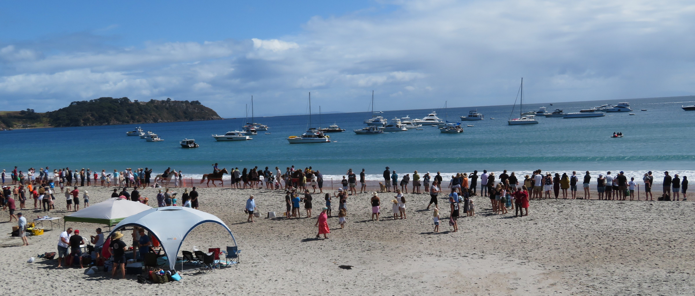Unbeknownst to us we arrive for the biggest day of the year, the beach races. Horses, tractors, duck boats all race on the beach. We take in the scene for a bit and move on, loosing Sylvia for a bit and eating some empenadas. We visit a honey farm, several wineries, and see some views.
Dinner that night was Vino Vino on the island, complete with a double rainbow over the bay. I had "Scallops from Hell", or a similar name. It was supposed to be devilishly hot scallops, but Kiwis don't really do spice, so it was pretty mild, but tasty.
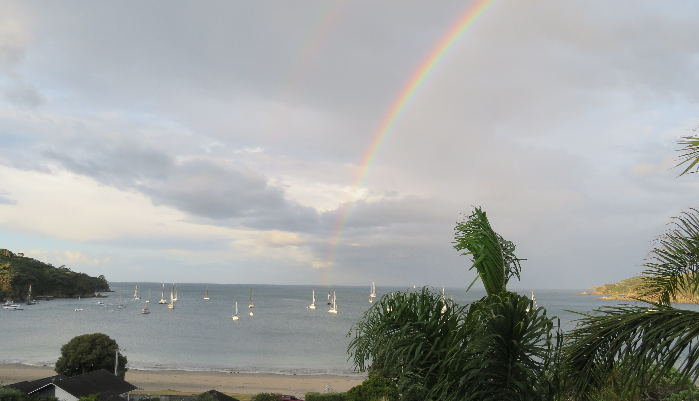
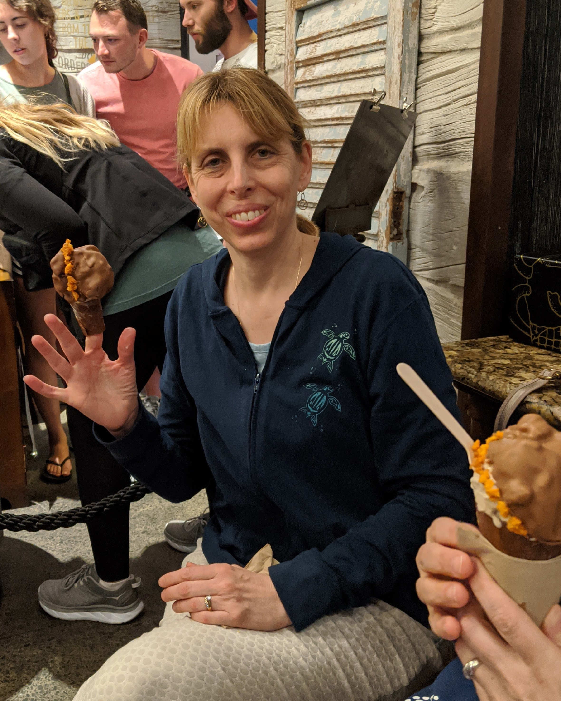After the ferry ride home, we stop at Giapo, a gourmet ice cream shop that makes intersting flavors, and extreme cones. We walk home through the park, and do some star gazing. Nikki and I almost step on it in the dark, but Sylvia spots the hedgehog.
Monday
Monday we walked around the city, in imitation of how I spend my days. We took a bus to Mount Eden, and found a bakery for some pies. Then we climbed to the top of the (extinct) volcano. There were some lovely views of the crater, and of the city.

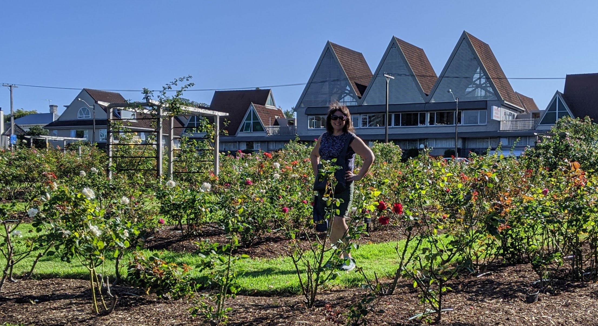
We walked to Newmarket for some shopping, then a short bus to Parnell for more shops, including the honey store for Anita. A short walk (though a steep hill) got us to the Parnell rose garden.
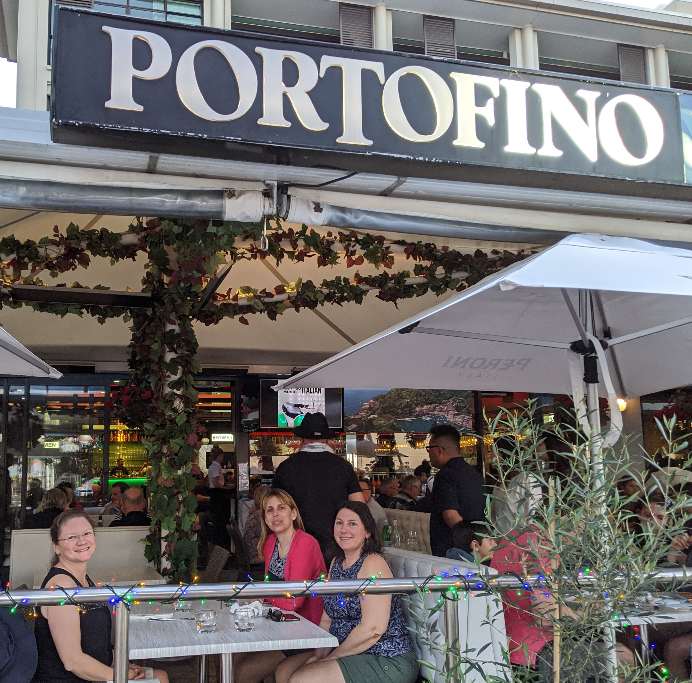
Finally, we took an Uber to the Viaduct for dinner. It was Nikki's Birthday, so she got to pick, and we ended up at Portofino, an Italian place overlooking the harbor. I had spaghetti carbonara. It was good, but not as good as Mom used to make. After dinner we found a tiny gelato place with some very good chocolate mint gelato.
Tuesday
| 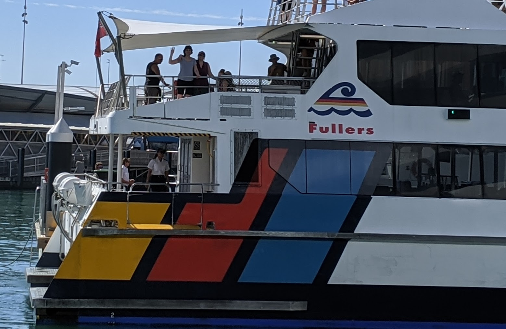 |
Tuesday the girls went to Rangitoto by themselves. Rangitoto is an island that is 600 years old, erupting about the same time as the Maori came to New Zealand. There is a lot of vegitation, but the volcanic rocks are very much in evidence.
Nikki spent the day at work, and I recuperated a bit from the doubling of our household. We met the girls in the viaduct after their trip, and had dinner at Dr Rudi's, a rooftop brewery. We had three feet of pizza. Not a yard, three separate feet.
|
 |

Wednesday
Wednesday was Waitomo for the glowworms. We rented a car and drove South. Along the way we stopped at Zealong, the only tea plantation in New Zealand. We didn't have much time, but we did enjoy a tea on their patio.

We got to Waitomo, and did black water rafting. I don't havdon't allow cameras in the cave, but I think Anita has a shot of us in our wetsuits. It was an amazing experience, but tiring, so we headed back to the citty afterwards, and stopped at a burger shack for dinner.

Thursday
Thursday we drive West of Auckland. We planned to visit several beaches, but road closures and timming got the better of us, and we only visited one, Piha Beach. But it was spectacular! Popular with surfers, and reknown for its super soft black sand, we spent a lot of time walking and taking it in.
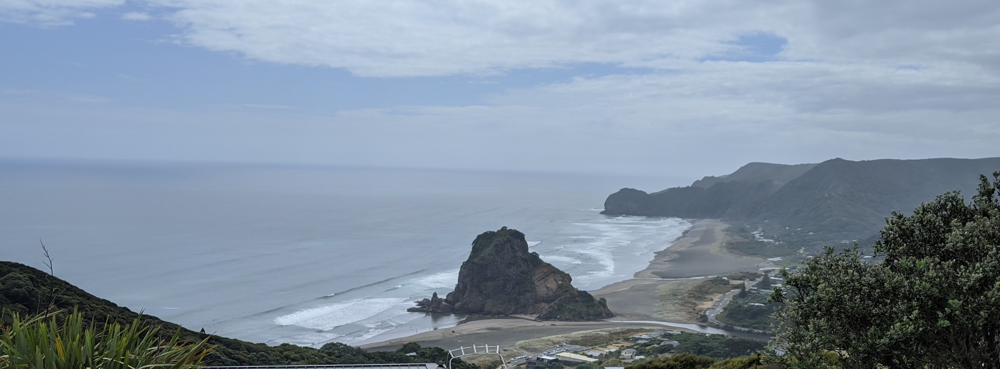
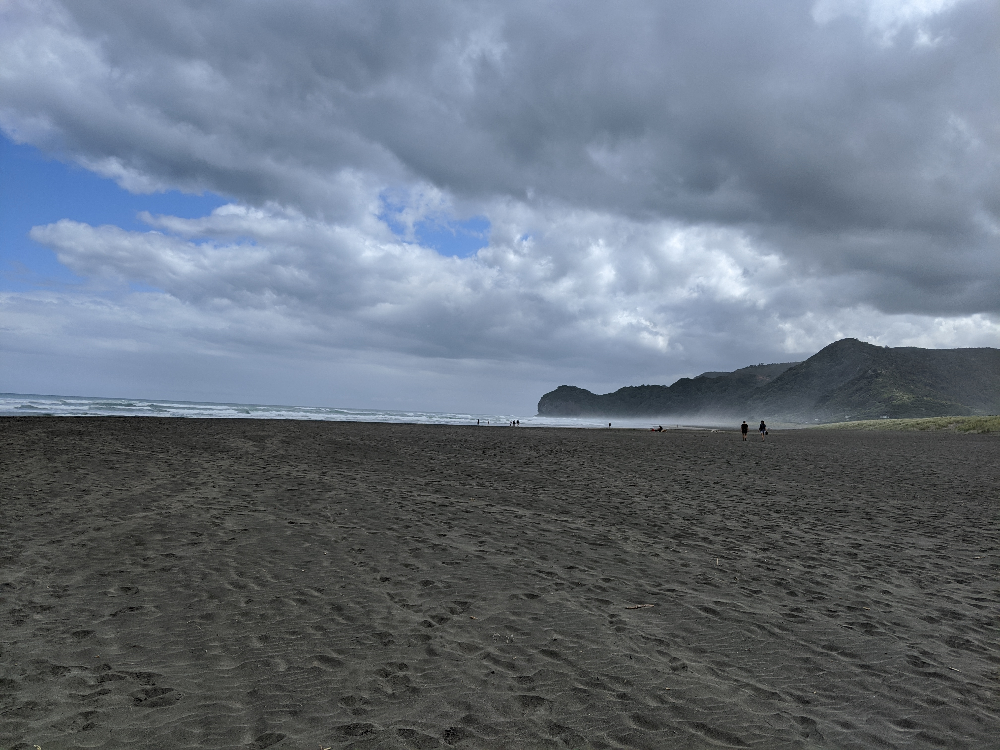
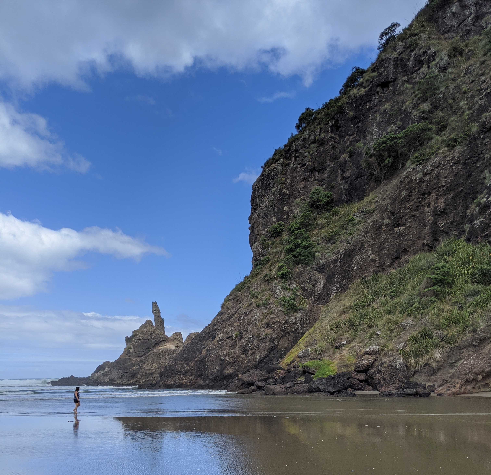
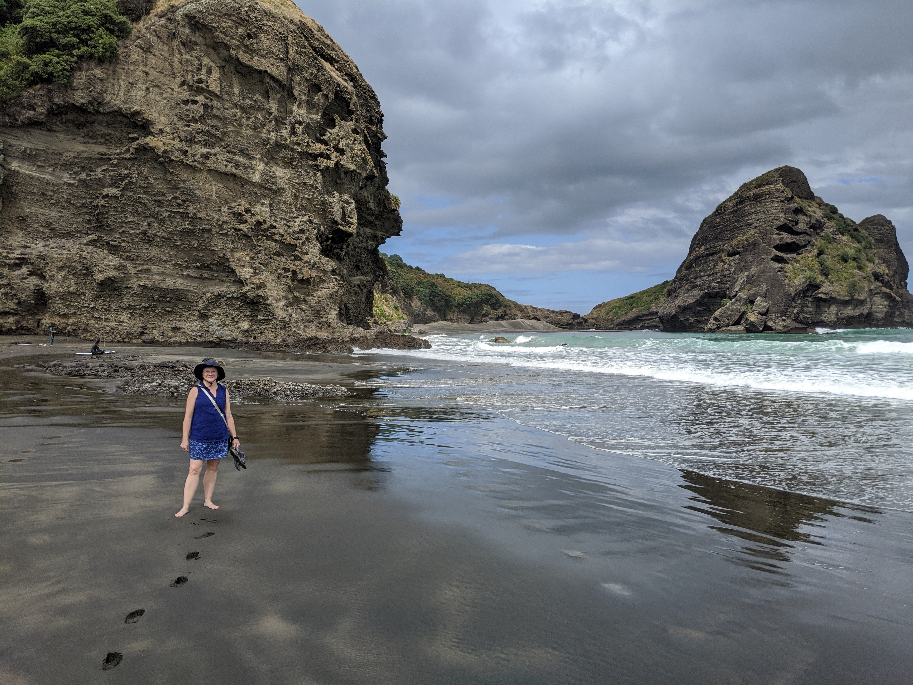
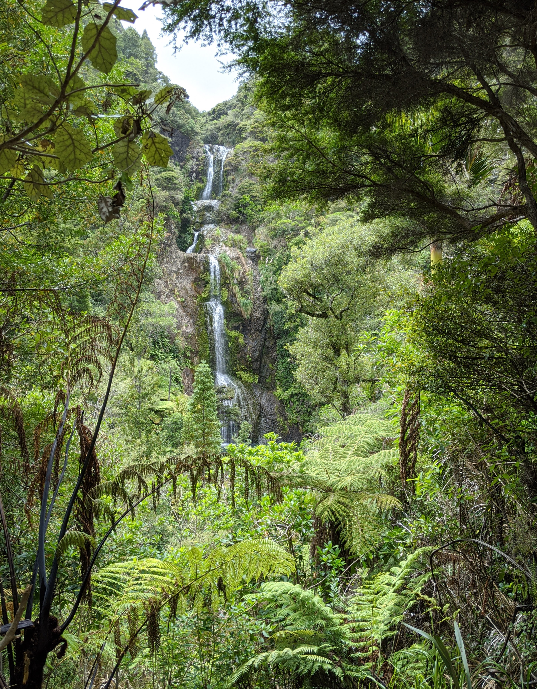
We then did a longer than expected hike to a waterfall. It was a small stream, but a very tall waterfall. We were able to wade into the pool at the base. The whole walk felt like a zoo, or movie set. Everything was pretty and perfect, even the bird calls. The stream had eels in it. Anita got a nice video.
After the falls, we drove back to civilization, and had a disapointing lunch in a mall ☹. Not every experience can be great.
We recovered from lunch and found some wineries, and did a couple of nice tastings. Much of the wine industry in New Zeland, and Auckland in particular, was pioneered by immigrants from Croatia. Who would have guessed?
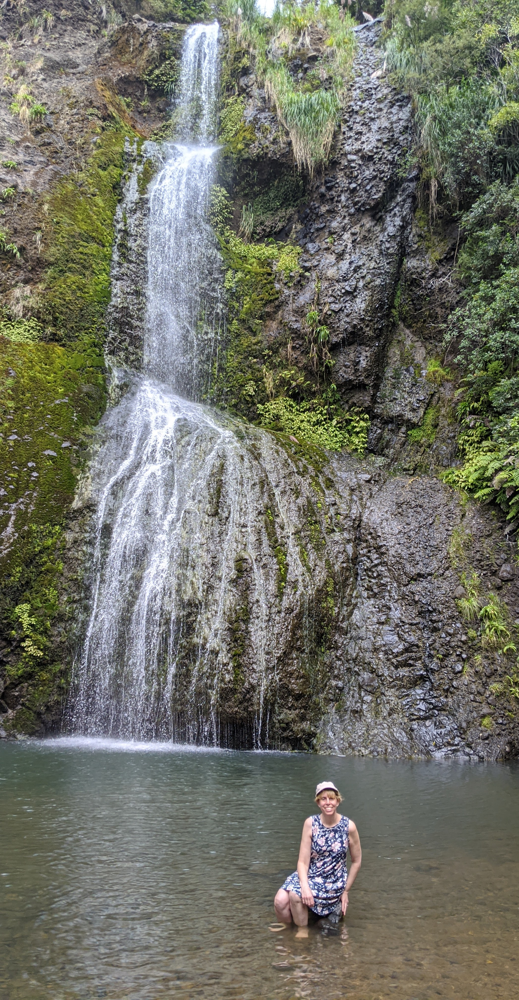
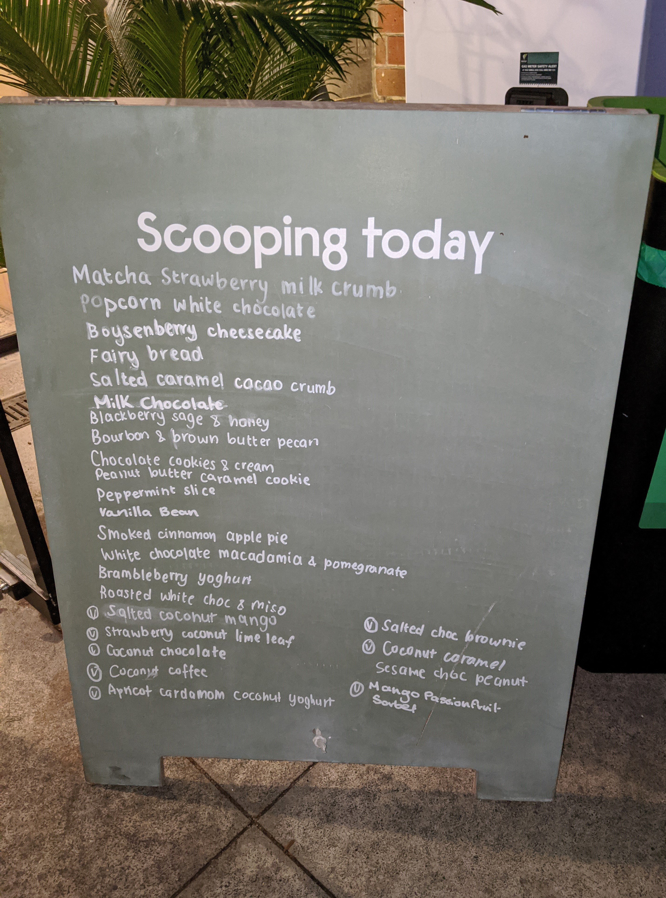
After the wine we drove back to Auckland. We had dinner at our place; Nikki and I walked up to a close Thai place we've been before, and got some takeaway. We opened a bottle or two of New Zealand wine and enjoyed.
After dinner, we walked to Nikki's favorite ice cream place and got cones for a very plesant end to the evening.
Friday
Saturday